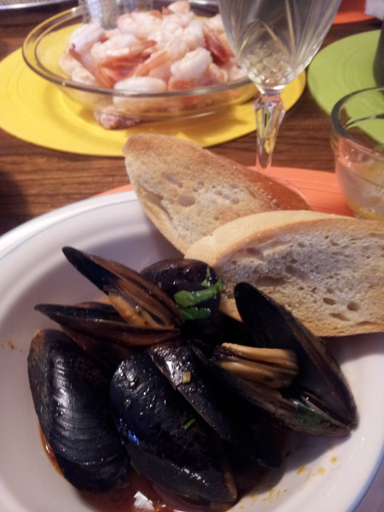

Zuppa di Cozze/Mussels in Spicy Sauce
Ingredients
- 4 lbs mussels
- 4 garlic, very finely chopped, plus 1 whole garlic clove
- 2 Tbsp chopped fresh flat leaf parsley
- 1 pinch of crushed red pepper
- 1/3 cup olive oil
- 1 cup white wine (dry)
- 3 lbs ripe tomatoes, peeled, seeded, and chopped or two 28 oz can Italian peeled tomatoes, drain and chopped.
- 8 slices Italian bread, toasted
Directions
- Places the mussel in cold water to cover for 30 minutes.
- Drain and scrub them with a stiff brush.
- Scrape off any barnacles or seaweed.
- Discard any mussels with cracked shells or that do not shut tightly when tapped.
- Remove the bear by pulling toward the narrow end of the shells.
- In a large saucepan, cook the chopped garlic, parsley and peperoncino in the oil over low heat until the garlic is golden, about 1 minute.
- Stir in the wine and bring to simmer.
- Add the tomatoes and salt.
- Cook over medium heat, stirring occasionally, until the sauce is slightly thickened, about 20 minutes.
- Gently stir in mussels.
- Cover the pot. Cook until the mussels open 5 to 10 minutes. Discard any that refuse to open.
- Rub the toast with the garlic clove.
- Serve the mussels.